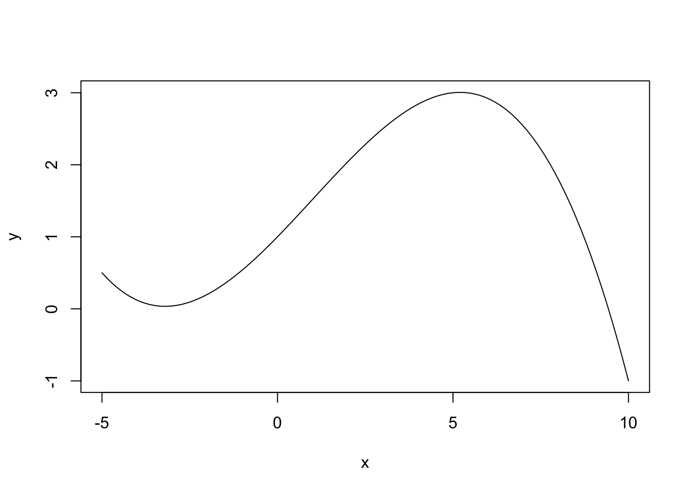
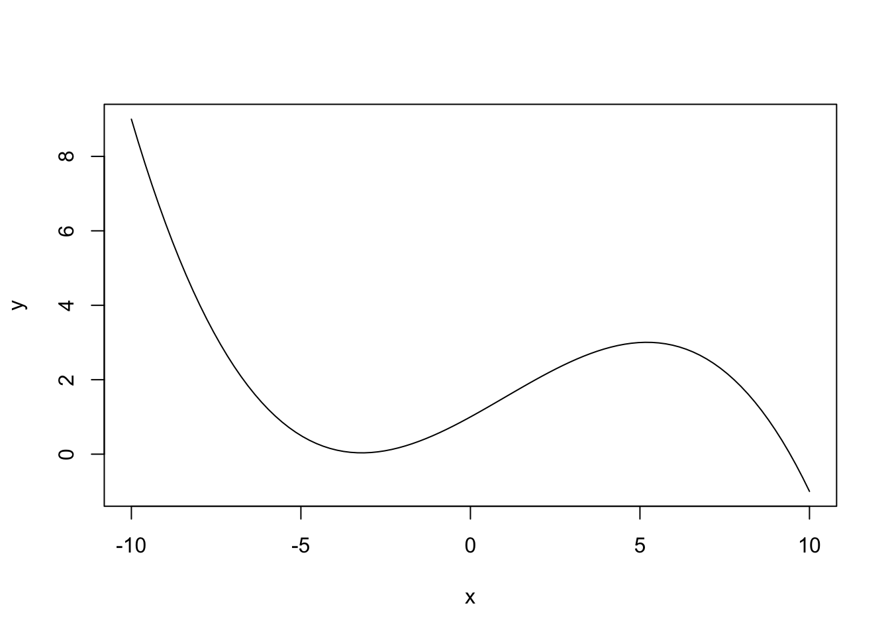

PLS 120. Introduction to Applied Statistics
Emilio A. Laca, Jennifer Brazeal, Cale Miller, Stephanie, Zullo
2018-02-16
Chapter 1 Statistics with R
1.1 Learning Objectives for Chapter
- Install R and RStudio.
- Find information about objects and functions in R.
- Create and use R scripts and projects in RStudio.
- Read data into R from csv files and line input.
- Data curation: validate and properly organize and manipulate data.
- Perform simple assignments and calculations.
- Use vectorized operations.
- Create, study and use data frames.
- Create simple plots and export them.
- Customize global and project options.
- Identify, list and describe function of each pane.
- Describe the efects of the parameters of the Uniform distribution
- Calculate the expected value of a random variable with Uniform distribution.
- Explain what the pdf of the Uniform distribution shows (y axis, X axis)
- Draw a sketch of the sum of 2 uniform distributions.
- Give an example of a random variable that might be modelled using the Uniform distribution.
1.2 R and RStudio
W. N. Venables, D. M. Smith and the R Core Team (R Core Team 2018) state: “R is an integrated suite of software facilities for data manipulation, calculation and graphical display.” They specifically leave out the word “statistics” to emphasize that R is actually an “environment” or fully planned coherent system for programming. RStudio furthers this idea and provides an IDE or integrated development system for programming in R and other languages. In fact, this book and all the figures and interactive examples and simulations were completely programmed, compiled and deployed using R in the RStudio IDE. The only way to get a good idea of what R and Rstudio can do is to use them with a curious and exploratory approach.
“>” on the left of each line in the Terminal is called the cursor and it indicates that R is ready to receive a command. When the cursos changes to “+” it means that you have submitted a partial command and R indicates it is waiting for you to finish the command.
Use material from lab 1.
“<-” and “=” mean the same thing. They assign the value on the right into the object on the left: object.name <- operation. The “=” sign is also used to give values to the arguments of functions, where “<-” does nto work. For example, to make an object called “my.random.numbers” with 5 random numbers from a normal distribution with mean 3 and standard deviation 2 we write:
my.random.numbers <- rnorm(n = 3, mean = 3, sd = 2)
We can read this as object `my.random.numbers’ gets …
1.3 Functions
Functions take arguments, perform operations on them and return results. For example, in mean(x = c(8, 4, 6)), mean() is the function and the argument called x receives the value c(8, 4, 6), which is a vector made up of the numbers 8, 4, and 6 in that order. The function returns a result that is the number 6.
Users interact with R mostly using functions. R and R packages provide thousands of functions, and each user can create new custom fuctions. Suppose we want to make a plot of a polynomial of order 3 for many different values of the parameters. We define a function that calculates the values of the polynomial and plots them all in one step.
plotPoly <- function(b0, b1, b2, b3, xmin, xmax){ # name function and arguments
x <- seq(from = xmin, to = xmax, length.out = 100) # create x values
y <- b0 + b1 * x + b2 * x^2 + b3 * x^3 # calculate y values
plot(y ~ x, type = "l") # plot the results
}
# Now that the function is defined we can make plots for any values of the arguments pretty quickly
plotPoly(b0 = 1, b1 = 0.5, b2 = 0.03, b3 = -0.01, xmin = -5, xmax = 10)
# Adjust the range of x to get a better view
plotPoly(b0 = 1, b1 = 0.5, b2 = 0.03, b3 = -0.01, xmin = -10, xmax = 10)
1.4 Help
RStudio has a pane specifically designed to find information about functions, objects, data and many other things in R. The help pane has an entry area for keywords at the top right. There is a basic toolbar that can be used to navigate pages as in a browser.
There is a large community of R users all over the world. This community provides lots of help and support through multiple websites. Whenever you are stuck and cannot find the information you need in a form that you understand using R help, you should use a seach engine, typically Google, and pose your question directly as a web search. This works remarkably well if you use the correct keyworkds. Always end your query with “in R” so the search is much more focused.
1.5 Data and data frames
See wikipedia entry on Data Curation.
One of the most common way to have data in R is using objects called data frames. These are table-like structures with rows and columns like a spreadsheet. Each column can have only one type of data, but different columns can have different data types. Data and objects in general in R can be of various types, called “modes.” Whenever we enter data into R and do not specify the type, R will assign it the data type that does not lose any information. For example, if we enter A, 1, 3, 4, t, i, 7.5, into a column of a data frame, R will make a column of type character, because that is the only mode that can contain letters and numbers, but the numbers are stored as characters. The mode of objects can be changed, with restrictions.
Point to R resources and cheatsheets.
Give simple examples.
R will be a tool that we need to use, but it is not the goal of the course.
All code will be provided, with exception of very simple fill-in-the-blank exercises.
Should we use Rcmdr?
Explain structure of R Studio, topology of scripts, markdown files, directory, etc.
1.6 Examples
Provide and example of a simulation to determine the distribution of the sum of two independent uniform distributions. The definition of independence is found in Section @ref(ch.Prob.indep) . Show analytic and simulation solutions. Show that analytic solution is general. Simulation may depend on the specific values selected to simulate.
1.7 Exercises and Solutions
Use simulation and analytic/intuition to determine what happens when two uniform distributions are summed. Explore uniform distributions with different coefficients. Explain that the coefficients of the uniform distribution are the two ends of the “box.”
Probability density function of the Uniform distribution U(a, b).
We write
\[\begin{equation} x \sim U(a, b) \quad \text{where} \quad \quad a< b \tag{1.1} \end{equation}\]to state that the continuous random variable \(x\) has a uniform distribution between a and b. This means that the probability of obtaining a value of x in an interval \([x_1, x_2]\) within [a,b] is constant and equal to \((x_2-x_1)/(b-a)\) @ref(fig:unif.dist.fig)
Note that the uniform distribution U(0, 1) is the distribution of the random numbers generated by the function RAND() in Excel. For more details on this distribution, see [Uniform Distribution] (https://en.wikipedia.org/wiki/Uniform_distribution_(continuous)).
\[\begin{equation} f(x) = \begin{cases} \frac{1}{b-a} & \quad \text{if } a \leq x \leq b \\ 0 & \quad \text{otherwise } \end{cases} \tag{1.2} \end{equation}\](ref:fig.unif.dist) Probability density function for the uniform distribution that has a support between any two values of the x-axis is the area under the line between those values.
# code for a unif dist with an interval and area selected
plotUnif <- function(a,b) {
x <- seq(from = a - (b - a), to = b + (b - a), length.out = 200)
plot(dunif(x, a, b) ~ x, type = "l")
}
plotUnif(1, 4.5)
(#fig:unif.dist.fig)(ref:fig.unif.dist)
1.8 Homework Problems
1.9 Laboratory Exercises
1.9.1 Plant Sciences
Animal Sciences
R Core Team. 2018. R: A Language and Environment for Statistical Computing. Vienna, Austria: R Foundation for Statistical Computing. https://www.R-project.org/.
References
R Core Team. 2018. R: A Language and Environment for Statistical Computing. Vienna, Austria: R Foundation for Statistical Computing. https://www.R-project.org/.